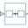

BooleanExpressionSet output signal to a time varying Boolean expression |
Information
This information is part of the Modelica Standard Library maintained by the Modelica Association.
The (time varying) Boolean output signal of this block can be defined in its parameter menu via variable y. The purpose is to support the easy definition of Boolean expressions in a block diagram. For example, in the y-menu the definition "time >= 1 and time <= 2" can be given in order to define that the output signal is true in the time interval 1 ≤ time ≤ 2 and otherwise it is false. Note, that "time" is a built-in variable that is always accessible and represents the "model time" and that variable y is both a variable and a connector.
Connectors (1)
| y |
Type: BooleanOutput Description: Value of Boolean output |
|---|
Used in Examples (4)
|
Modelica.Blocks.Examples Demonstrates the usage of logical sources together with their diagram animation |
|
|
Modelica.StateGraph.Examples A variant of the first simple StateGraph example |
|
|
Modelica.StateGraph.Examples Example to demonstrate parallel and alternative execution paths |
|
|
Modelica.StateGraph.Examples Example to demonstrate parallel activities described by a StateGraph |
Used in Components (6)
|
Modelica.Blocks.Examples.BusUsage_Utilities Component with sub-control bus |
|
|
Modelica.Blocks.Math Output the total harmonic distortion (THD) |
|
|
Modelica.StateGraph.Examples.Utilities Controller for tank system |
|
|
Modelica.Electrical.PowerConverters.DCAC.Control Intersective PWM |
|
|
Modelica.Fluid.Examples.ControlledTankSystem.Utilities Controller for tank system |
|
|  |
Modelica.Fluid.Examples.AST_BatchPlant.BaseClasses |